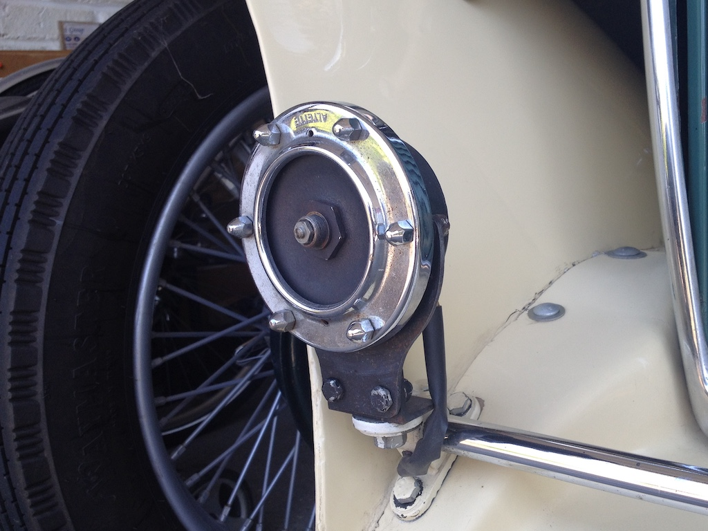

All cars must have a horn so that the driver can warn other drivers, cyclists and walkers that they are coming. This is the horn on my car. But it does not work! The last owner of the car fitted a cheap, plastic horn under the bonnet (the cover over the engine that Austin would call a hood) so that when you press the horn push inside the car you get a sound.
You know that a magnet will stick to some metals like iron and steel, but will not stick to other metals such as aluminium and copper. You can make a magnet by wrapping a coil of wire around a piece of iron and passing electricity through the coil. This is called an electromagnet. They are used in things like speakers and electric motors.
The horn on my car uses an electromagnet. When you press the horn push inside the car the magnet pulls the middle of a metal plate towards it. That makes a switch open, which turns off the electricity and so the plate moves back. This keeps happening very fast so that the plate vibrates and makes a sound. But my horn doesn't make a sound!
So my next little project on my car is to take apart the horn to see if I can get it working. I'll let you know how I get on.